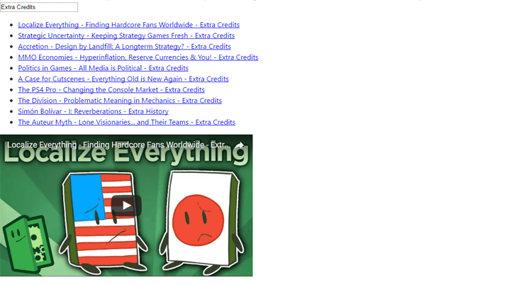

About
Highly skilled, conscientious and precise, quality focused Web Developer with high quality front end web development skills. BSc in Computer Science and 3 years’ commercial experience. Particularly skilled at working with clients to develop digital marketing strategies through web technologies and creating the best solution for them to build, analyse and push forward their business. Using appropriate development technologies and strategies for example open CMSs (Concrete5 or Wordpress), bespoke html, CSS and JavaScript to create responsive, performant SEO friendly websites to promote high rankings in search engine results pages.
projects
Tom Hopkins Website
This website's design is based designs from animation from my Project 2 - Animation project, Nier: Automata UI, Elementalist Lux skin introduction. It allow me to play around with many techniques I rarely use like background textures, rotated text and decoration to draw the eye.
Project 2 - Animation
A look into complex animation using just css and playing around with the basic tooling available from chrome dev tools to create the animation.
Project 3 - Wireframe Layout
Playing around with the concepts of ITCSS, BEMIT and looking at the new layout techniques available from using both flexbox and grid. The design is based off a wireframe found on dribble.
Project 4 - Functional JS

Playing around with functional programming using functors, using the latest version of folktale, ramda and bacon js. I created a simple youtube video search app.
Servon Design
Servon Designs latest website, I focussed on creating a performant bespoke website with the flexibility to do what we want. All css and js is hand written with some small libaries like jumpjs used as a base for parts of the functionality.